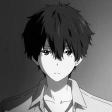

A barely imperceptible colored-speck that exists around the host
character. The color permeates an aura around the host, which
rapidly change color when they use their shade technique. A shade
that holds unspeakable power despite its simplicity, Shade of Colors
is able to manipulate the properties and states of the matter around
it.
Host: Sojo

SKILLS
| Energy Color Shift: Red [6SP/Round] |
|---|
|
When touching an object, you can rapidly displace or add
energy to it. For example, producing a fireball by holding a
lit flame and rapidly adding heat energy to it, or rapidly
taking away gravitational potential energy from an object,
preventing it from falling momentarily as it gathers it's
potential energy again. This technique is heavily SPIRIT
intensive, costing 6 SPIRIT per 6 seconds a technique is
active. Additionally, as a bonus action, you can add
additional magical damage to a spell cast equal to 1/5 of
SPIRIT used.
As a bonus action, you can add red into ONE INSTANCE of the effect of a spell or a cantrip that you cast in the same turn. (Ala, scorching ray is 3 rays, but only 1 ray has red). When using red, the spell or cantrip will target the enemy using it's Spirit DEF stat rather than its AC if it's an attack roll. Red also allows the spell or cantrip to ignore cover and line of sight, as well as extending the range of the ability by 30 ft. By expending another 3SP for a total of 9SP, you can enhance the effect of red on the spell/cantrip and deal an additional d10 damage, and you can change the damage type of the ray to any damage type (except true). |
| Substance Color Shift: Blue [6SP/Round] |
|---|
|
By rapidly shifting energy and SPIRIT, the host can
transmute simple materials, such as a simple block of wood,
carbon etc. Additionally, by consuming an exorbitant amount
of SPIRIT, the host may attempt to transmute away solid
objects, but the rate at which is extremely slow and SPIRIT
inefficient. The more complex the object, the more SPIRIT it
takes.
As a bonus action, you can add blue into ONE INSTANCE of the effect of a spell or a cantrip that you cast in the same turn. (Ala, scorching ray is 3 rays, but only 1 ray has red). When using blue, you are able to delay the casting and activation of spells and cantrips, storing the spell and cantrip within an item, surface, object or materialise the spell/cantrip as a barely physical blue orb. The spell will automatically trigger when the object or surface is destroyed, and if not, they are automatically casted at the start of your next turn. By expending another 3SP for a total of 9SP, you can enhance the effect of blue on the spell/cantrip to deal an additional d10 damage and ignores resistances. |
| Spirit Colour Shift: Yellow |
|---|
| Encapsulates the flow of Spirit energy in the world and it's creatures. Yellow rapidly shifts and manipulates the Spirit of creatures, essentially bending it's will and it's life force. As a passive, you regenerate 1SP at the start of your turn. |
SIGNATURE
| Tsveta mira, Slit'sya V Odin: Colors of the World, Blend into One |
|---|
| Matter Color Shift: Purple [20SP] |
As an action, the host character picks a simple object no
bigger than the palm of his hand, the object is rapidly
compressed and charged with energy by Color Shift Blue and
Color Shift Red. The object slowly becomes a glowing purple
orb which can be launched at any target within 400ft. Every
creature the orb passes, make an attack roll against the
creature. The orb will punch through any simple physical
barriers and deals (2 + proficiency bonus)d10 kinetic damage
to any creature successfully hit by the orb. Every creature
successfully hit by the attack will be debuffed with one of
TWO debuffs:
|
| Potential Color Shift: Lime Green [22 SP] |
| As a main action, by fusing Blue and Yellow together, rapidly shifting Spirit and Energy into the hosts body. The host becomes charged with massive amounts of energy and Spirit before letting it release as multiple streams of emerald green lightning blasts at an enemy. All creatures within a 60ft cone will make a DEX save, on a successful save they take half. Creatures will take damage equal to (2+PB) d12 psychic damage, as this energy rends at the Spirit and their Energy. Creatures who fail the save for this ability will be unable to regain SPIRIT until the end of their next turn. |
| Color Shift: Citrus Orange [14SP] |
| As a reaction, when you were to be downed by a single instance of damage, you instead revert back to shalf of your maximum HP and full SP. By fusing Red and Yellow together, you can rapidly regenerate your energy and spirit to prevent a fatal demise. |